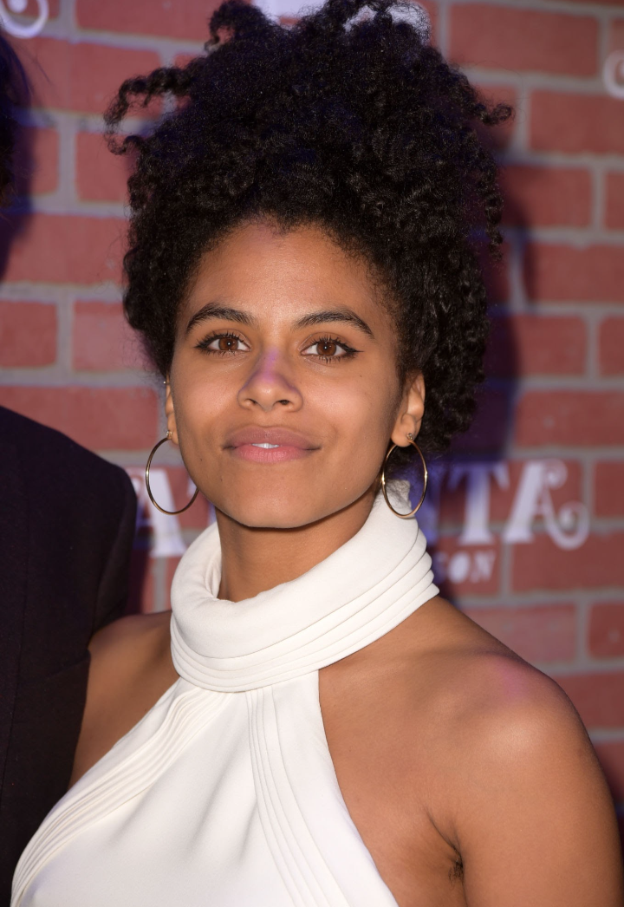
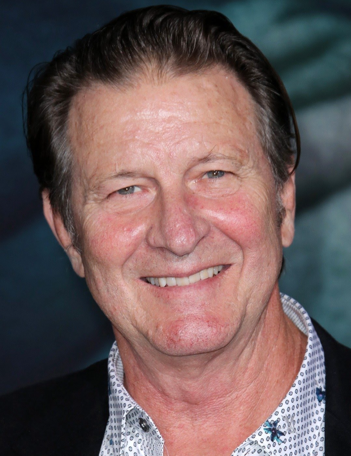
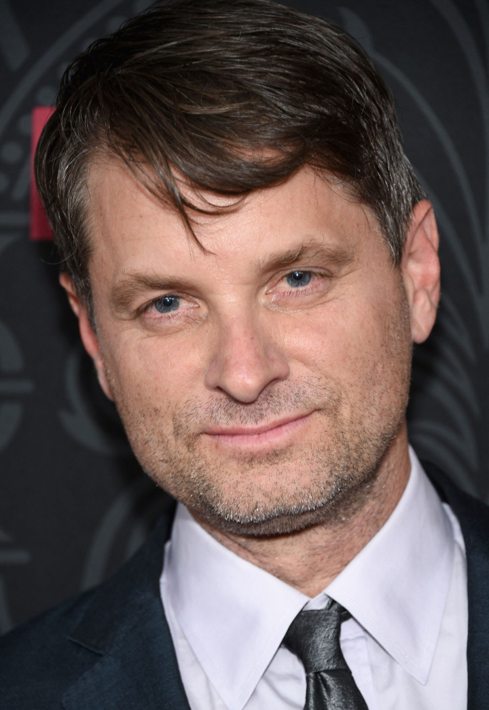
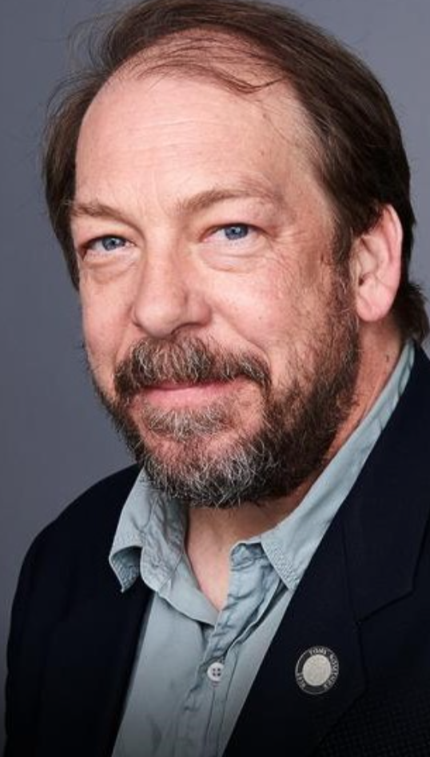
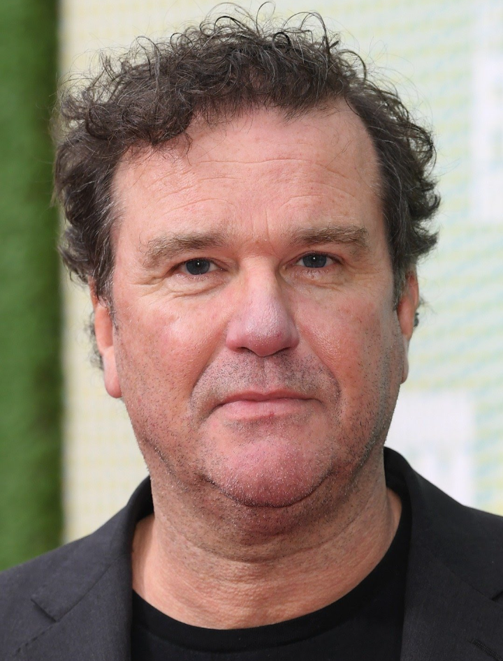

Biografia: Ele tem 35 anos de carreira e mais de 39 filmes e series feitos. Nascido dia 28 de outubro de 1974 (idade 47 anos), em Río Piedras No início da carreira usava o nome artístico de Leaf Phoenix;- É irmão do ator River Phoenix, que faleceu em 1993.Phoenix começou a atuar em séries de televisão com seu irmão River e a irmã Summer. Seu primeiro grande lançamento no cinema foi SpaceCamp (1986). Durante seu período como ator mirim, ele foi creditado como Leaf Phoenix, nome que ele escolhera. Mais tarde, ele voltou ao seu nome de nascimento, Joaquin, e recebeu críticas positivas por seu trabalho coadjuvante em uma ampla variedade de filmes, principalmente pela adaptação cinematográfica do romance To Die For (1995) e do filme de época Quills (2000). Ele recebeu atenção internacional por sua interpretação de Commodus no épico histórico Gladiador (2000), que lhe rendeu uma indicação ao Óscar de Melhor Ator Coadjuvante. Posteriormente, recebeu indicações para Melhor Ator por interpretar o músico Johnny Cash na cinebiografia Walk the Line (2005) e por seu papel como Freddie Quell, um veterano da Segunda Guerra Mundial no filme de drama The Master (2012), que lhe rendeu a Coppa Volpi de Melhor Ator. Ele e River são os únicos atores irmãos indicados ao Óscar.

Biografia: Ele tem 51 anos de carreira e mais de 121 filme e séries. Nascido em 17 de agosto de 1943 (idade 78 anos), em Greenwich Village, Nova Iorque, Nova York, EUA No início da carreira usava o nome artístico de Leaf Phoenix;- É irmão do ator River Phoenix, que faleceu em 1993, De Niro é conhecido por sua longa e aclamada colaboração com o diretor Martin Scorsese, que começou em 1973, em Mean Streets. Desde então, protagonizou diversos filmes de Scorcese aclamados pela crítica. Ele ganhou o Oscar de Melhor Ator (principal) pelo filme Raging Bull (br: Touro Indomável), e foi indicado ao Oscar por Taxi Driver (1976) e Cape Fear (1991). Além disso, foi indicado a diversos prêmios por The Deer Hunter (br: O Franco Atirador), de 1978, e Awakenings (br: Tempo de Despertar), de 1990. No mesmo ano, a atuação de De Niro em Goodfellas (br: Os Bons Companheiros) lhe rendeu uma indicação ao prémio BAFTA.Ao longo de sua carreira, Robert De Niro recebeu diversos elogios e prêmios, sendo sua importância como artista e sua dedicação a profissão reconhecidos mundialmente, sendo amplamente considerado como um dos melhores atores da história do cinema.

Biografia: Ela tem 5 anso de carreira e 18 filmes e series feitos. Zazie Olivia Beetz é uma atriz teuto-americana, mais conhecida por seu papel como Vanessa "Van" Keefer no FX série de comédia dramática Atlanta, que a rendeu uma indicação para o Primetime Emmy Award de Melhor Atriz Coadjuvante em série de comédia. Ela também esteve no elenco de Easy, série da Netflix. Nascida dia 25 de maio de 1991 (idade 31 anos), em Mitte, Berlim, Alemanha ela e alemã e amarericana

Biografia:Ela tem 41 anos de carreira e maia de 56 filmes e séries. Nascido dia 15 de março de 1953 (idade 69 anos),em Monroe, Geórgia, EUA Graduada em interpretação no Juilliard Drama Division, seu papel de maior destaque foi na série de televisão Six Feet Under (A Sete Palmos - BR), onde viveu a solitária matriarca Ruth Fisher. A atriz atuou em filmes, como O Sacrifício, Perfume de Mulher, Garota da Vitrine, Mulher-Gato,Flores Partidas, O Aviador, Sintonia de Amor e Coringa

Biografia: Ele tem 38 anos de carreira e mais de 66 filmes e séries. Brett nasceu em 26 de agosto de 1956 (idade 65 anos em Houston, Texas, filho de Lucien Hugh Cullen, um empresário da indústria do petróleo, e de Catherine Cullen. Frequentou a Madison High School de Houston em 1974.Brett formou-se pela Universidade de Houston, tendo sido muito aclamado nas suas capacidades pelo professor de representação da Universidade de Houston, Cecil Pickett, que também foi mentor de outros atores nascidos em Houston como Dennis Quaid, Randy Quaid, & Brent Spiner, entre outros.

Biografia: Ele tem 20 anos de carreira e mais de 59 filmes e séries. Franklin Shea Whigham Jr. (nascido em 5 de janeiro de 1969) é um ator americano, mais conhecido por interpretar Elias "Eli" Thompson na série dramática Boardwalk Empire . Ele também apareceu na primeira temporada de True Detective e na terceira temporada de Fargo , juntamente com vários filmes, incluindo Take Shelter , Silver Linings Playbook , American Hustle , The Wolf of Wall Street , Kong: Skull Island , First Man , Vice e Joker . . Ele apareceu como agente Michael Stasiak em Velozes e Furiosos ,Velozes e Furiosos 6 e F9

Biografia:Ele tem 29 anos de carreira e mais de 42 filmes. Bill Camp (nascido em 1963/1964) é um ator americano. Ele desempenhou papéis coadjuvantes em muitos filmes como Lincoln (2012), Compliance (2012), 12 Years a Slave (2013), Love & Mercy (2015), Loving (2016), Molly's Game (2017), Vice (2018) , Vida Selvagem (2018), Coringa (2019) e Notícias do Mundo (2021); a minissérie da HBO The Night Of em 2016 e The Outsider em 2020; e a minissérie Netflix The Queen's Gambitem 2020. Ele teve um papel recorrente na série dramática da HBO The Leftovers de 2015 a 2017 e na série dramática espacial Hulu The First em 2018.

Biografia: Ele tem 32 anos de carreira e 28 filmes e séries. Douglas Hodge (nascido em 25 de fevereiro de 1960) é um ator, diretor e músico inglês que treinou para o palco na Royal Academy of Dramatic Art .É membro do conselho do Teatro Nacional da Juventude para o qual, em 1989, co-escreveu a Bênção de Pacha Mama sobre as Florestas Amazônicas encenada no Teatro Almeida
PERSONAGEM : BRUCE WAYNE feito por Dante Pereira-Olson, PERSONAGEM: MARTHA WAYNE feito por Carrie Louise Putrello, PERSONAGEM: RANDALL feito por Glenn Fleshler, PERSONAGEM: HOYT VAUGHN feito por Josh Pais, PERSONAGEM: GENE UFLAND feito por Marc Maron, PERSONAGEM: DR.SALLY feito por Sondra James, PERSONAGEM: BARRY O’DONNELL feito por Murphy Guyer, PERSONAGEM: YOUNG PENNY feito por Hannah Gross, PERSONAGEM: CARL feitos por Brian Tyree Henry e Bryan Callen e Personagem: COMEDIAN feito por Gary Gulman.
DIREÇÃO DO FILME

Biografia: Ele tem 20 anos de carreira e mais de 19 filmes e séries. Todd Phillips (nascido Todd Bunzl em 20 de dezembro de 1970) é um roteirista e diretor de cinema estadunidense. Ele é mais conhecido pelo super sucesso Joker que lhe rendeu indicações ao Óscar por Melhor Filme, Melhor Diretor e Melhor Roteiro Adaptado.
OUTROS QUE FIZERAM PARTE DO FILME:TRILHA SONORA Compositor:Hildur Guðnadóttir, PRODUÇÃO Produtor Executivo: Michael E. Uslan, Produtor:Todd Phillips, Produtor Executivo: Walter Hamada,Produtor Executivo:Aaron L. Gilbert e Joseph Garner,Produtor:Bradley Cooper,Produtor:Emma Tillinger Koskoff,Produtor Executivo:Richard Baratta, Produtor Executivo:Bruce Berman, EQUIPE TÉCNICA: Cenografista:Mark Friedberg, Montador chefe:Jeff Groth, Chefe figurinista: Mark Bridges, Diretor de fotografia:Lawrence Sher